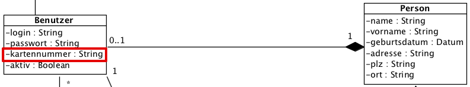

{% extends "../_base_template.html" %}
{% block title %}Lektion 13 - Design Pattern - Übungen{% endblock %}

{% block sections %}
<section data-markdown>
<textarea data-template>
<i class="fas fa-flask"></i> Übungen zu Design Pattern
=============================

Ziel
-----

* Sie kennen die 5 Design Pattern aus dem Unterricht:
  * Singleton
  * Factory Method
  * Observer/Observable
  * Adapter
  * Strategy
* Sie können diese in Java korrekt implementieren


</textarea>
</section>

<section data-markdown>
<textarea data-template>
<i class="fas fa-flask"></i> Design Pattern
=============================

Wir fassen nochmals zusammen:

* Design Pattern sind Ideen, "Best Practices", wie bestimmte, konkrete und wiederkehrende Problemstellungen gelöst werden können.
* Design Pattern finden Sie überall, und Sie wenden diese vielmals intuitiv und ohne dass Sie sich dessen bewusst sind an.
* Design Pattern helfen vor allem in grösseren Projekten, eine gewisse Code-Standardisierung zu erzielen: Sie definieren vielmals die grundlegende Architektur (z.B. MVC)
* Design Pattern finden Sie in allen Programmiersprachen.

Infos zu Design Pattern finden Sie z.B. hier:

http://java-design-patterns.com/patterns/


</textarea>
</section>

<section data-markdown>
<textarea data-template>
<i class="fas fa-graduation-cap"></i> Übungen zu Design Pattern
=============================

Übung zum Singleton-Pattern
---------------------------

1. Analyse: Zeigen Sie, wo Sie in BibSys eine Singleton-Klasse finden!
2. Analyse: Können Sie sich vorstellen, warum hier ein Singleton-Design-Pattern verwendet wurde?
3. Erstellen Sie ein kleines Beispiel-Programm mit einer Singleton-Klasse:
   * Erstellen Sie eine Singleton-Klasse "Drucker". Die Drucker-Klasse stellt eine Schnittstelle zu einem Beleg-Drucker im Bibsys-System dar
   * Erstellen Sie ein Main-Programm, welches sich eine Instanz der Klasse "Drucker" organisiert
   * Zeigen Sie im Programm, dass:
     * ein zweites Abholen der Singleton-Instanz auch wirklich dieselbe instanz liefert
     * dass Sie die Klasse "Drucker" nicht mit new() in stanzieren können.

</textarea>
</section>

<section data-markdown>
<textarea data-template>
<i class="fas fa-graduation-cap"></i> Übungen zu Design Pattern
=============================

Übung zum Pattern "Factory Method"
----------------------------------

Unser Datenmodell sieht vor, dass eine Person einen Benutzer-Account erhält. Zum Benutzer-Account gehört eine Benutzerkarte,
welche auf dem Benutzer unter dem Attribut "Kartennummer" registriert wird:



* Ergänzen Sie die Klasse `Person` um die Assoziation zum Benutzer
* Ergänzen Sie die Klasse `Benutzer` um die entsprechenden Attribute
* Ergänzen Sie die Klasse `DataContainer` um eine Liste von Person-Objekten, analog `benutzerList` und `medienList`:
```java
public List<Person> personList = new ArrayList<>();
```
* **Factory Method**: Erstellen Sie eine Methode `erzeugePerson(Name, Vorname, Geburtsdatum)` in der Klasse `DataContainer`, welche:
    * ein neues Person-Objekt anlegt und die gegebenen Daten darauf speichert
    * ein neues Benutzer-Objekt anlegt und der Person zuweist
    * in diesem einen Benutzernamen aufgrund Vorname/Nachname der Person erzeugt (login)
    * eine Kartennummer erzeugt. Dabei gilt: Die Kartennummer unterscheidet sich für Jugendliche / Erwachsene:
      * Unter 18 Jahren: Kartennummer: "J-nnnnnn" (n steht für eine generierte Nummer)
      * ab 18 Jahren: Kartennummer: "E-nnnnnn" (n steht für eine generierte Nummer)
    * das fertige Person-Objekt zurückliefert

Demonstrieren Sie die Funktionalität (Anlegen einer neuen Person, Ausgabe von Person- und Kartendaten) in einem Beispielprogramm!


</textarea>
</section>

<section data-markdown>
<textarea data-template>
<i class="fas fa-graduation-cap"></i> Übungen zu Design Pattern
=============================

Übung zum Pattern "Strategy"
----------------------------------

Auf dem Benutzer-Objekt werden die ausgeliehenen Medien gespeichert. Die Liste der ausgeliehenen Medien soll auf verschiedene Weise ausgegeben werden können:
* als Text-Liste für die Konsolen-Applikation
* als HTML-Liste für eine Anzeige in einer Web-Applikation.

Erstellen Sie in der Klasse **`Benutzer`** eine **`printAusleihen()`**-Methode, welche den Druck via Strategy-Pattern umsetzt:
Die printAusleihe()-Funktion fungiert als `Context` im Strategy-Pattern: Sie nimmt ein Strategy-Objekt entgegen.

Die Methode soll also wahlweise eine Text- oder HTML-Liste erzeugen / ausgeben, je nach gewählter Strategy.

Demonstrieren Sie dieses Verhalten in einem Testprogramm.

</textarea>
</section>

<section data-markdown>
<textarea data-template>
<i class="fas fa-graduation-cap"></i> Übungen zu Design Pattern
=============================

Übung zum Pattern "Observer/Observable"
----------------------------------

Betrachten Sie folgendes Programm: Ein nebenläufiger Thread generiert alle Sekunden eine Information (aktueller Zählerstand):

<pre><code class="java">
public class SenderThread extends Thread {
	int counter = 0;

	@Override
	public void run() {
		while (true) {
			try {
				this.sleep(1000);
				// Hier: Observer informieren: aktuellen Counter übermitteln
				this.counter++;
			} catch (InterruptedException e) {
				e.printStackTrace();
			}
		}
	}
}

public class Main {
	public void start() {
		// Nebenläufigere Thread wird gestartet:
		SenderThread sender = new SenderThread();
		sender.start();

		// Hier: Observer / Listener implementieren, aktuellen counter ausgeben
	}

	public static void main(String[] args) {
		new Main().start();
	}
}
</code></pre>
</textarea>
</section>

<section data-markdown>
<textarea data-template>
<i class="fas fa-graduation-cap"></i> Übungen zu Design Pattern
=============================

Übung zum Pattern "Observer/Observable": 2. Übung
----------------------------------

Wie bereits erwähnt wird das MVC-Pattern vielmals im Zusammenhang mit dem Observer/Observable-Pattern implementiert.

Erstellen Sie folgendes Programm:

* Erstellen Sie eine Klasse "Model", welche:
  * als Observable dient: Es informiert seine Beobachter, wenn Daten verändert werden
  * ein Attribut "zeit" (Typ: java.util.Date()) hat.
  * eine Setter-Methode setZeit(Date date) hat: Bei Änderung an der Zeit informiert das Model seine Observer.
* Erstellen Sie eine Klasse "Controller", welche als Observer des Model dient:
  * Der Controller kennt sowohl das Model wie auch eine View.
  * bei Aktualisierung des Models wird die View aktualisiert.
* Erstellen Sie eine Klasse "View", welche:
  * durch den Controller durch die neue Zeit informiert wird, und diese dann ausgibt.
* Hier wird ein rudimentäres MVC-Pattern zusammen mit dem Observer-Pattern implementiert. Überlegen Sie sich gut,
  welche Klassen welche Rollen übernehmen und welche Pattern sie abbilden.

Das Main-Programm sieht dann etwa so aus:

<pre><code class="java">
public class Main {
	public static void main(String[] args) throws InterruptedException {
        // Model wird erzeugt:
        Model m = new Model();

        // Controller und View wird erzeugt:
        View v = new View();
        Controller c = new Controller(v);
        c.setModel(m);

        // Model wird verändert,
        // Ausgabe der View folgt jeweils:
        m.setZeit(new Date()); Thread.sleep(1000); // 1 Sek warten
		m.setZeit(new Date()); Thread.sleep(1000);
		m.setZeit(new Date());
	}
}
</code></pre>
</textarea>
</section>

<section data-markdown>
<textarea data-template>
<i class="fas fa-flask"></i> Hausaufgaben
=============================

</textarea>
</section>
{% endblock %}
